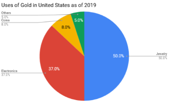
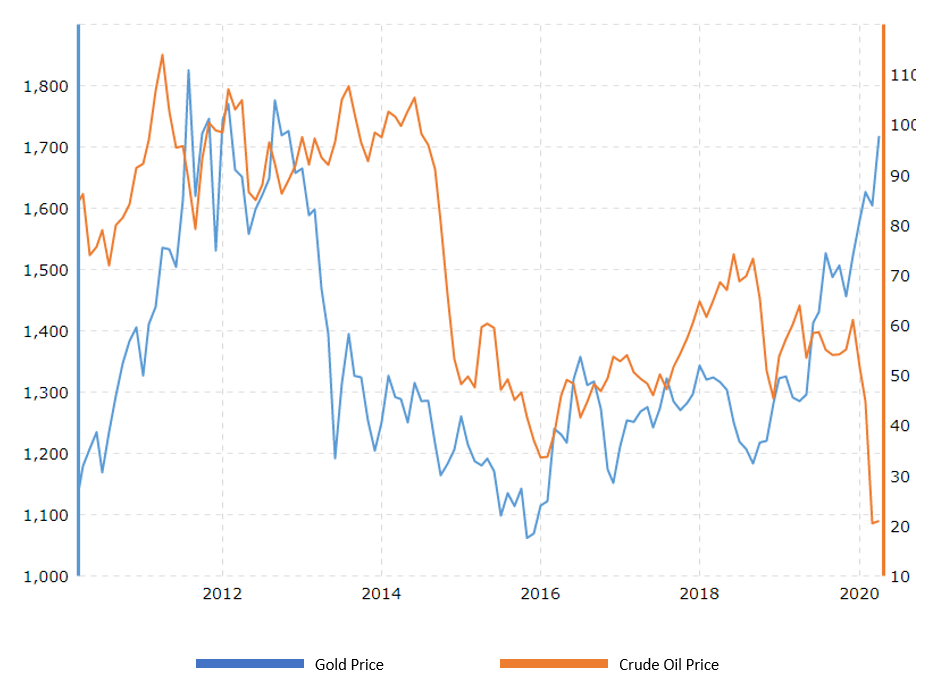
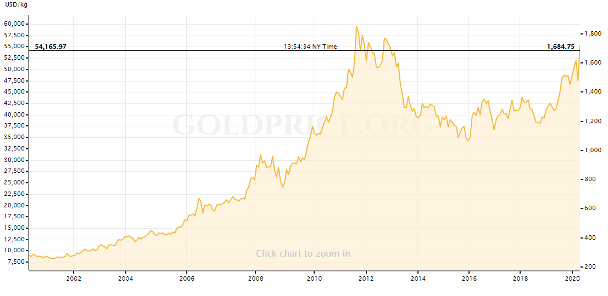

Time to gold?
Growing up in an Asian household, we have always been told that gold is the go-to and a safe haven for most investors. There is some truth to this. Gold is highly sought after by investors to limit their exposure to losses in the event in time of market downturn. It is commonly seen as a safe haven asset which is an investment that is expected to retain or increase in value during time of market turbulence. However, in light of the pandemic, gold has been failing the expectations of investors. What is happening here? Why is gold not reacting to these changes and rising like what most assume. In this article, I hope to help you understand the fundamentals that affect gold prices and give you some perspective on how gold will swing with the current COVID-19 situation.
So why is gold highly-priced and how does the market affect its price? Let’s first understand the fundamentals of how gold prices move.
Fundamentals
As with all commodities, this market is mainly driven by supply and demand but let’s not forget one of the other factors - Investor behavior. Sounds relatively straightforward and may I say simple? Yet when these factors work together it can be counterintuitive at times. For instance, most investors see gold as an inflation hedge tool. Common sense would tell you that it makes sense as paper money depreciates as more is printed while the supply of gold is relatively constant. But does this mean that gold correlates well to inflation? Does the gold price rise when inflation is up? I am highly skeptical of that.
Fear is the one that drives gold prices. During times of economic crisis, investors flock to gold. During the Great Recession in 2008, gold prices rose. But gold prices were already rising until the beginning of 2008, nearing USD 1,000 an ounce before falling under USD 800 and then bouncing back and rising as the stock market bottomed out. That said, gold prices rose further, even as the economy recovered. The price of gold peaked in 2011 at USD 1,921 and has seen ups and downs since that time. So does this mean that gold prices are simply erratic? According to a research titled The Golden Dilemma, it has been noted that gold has positive price elasticity. Simply put, if investors start flocking to gold, the price rises no matter what shape the economy is or what fiscal policy might be. There aren't many fundamentals to it.
That being said, shouldn’t gold depreciate in terms of value? Since there is more and more of it around. Sure, some people hold them in hope that it appreciates or hedges against inflation. But a huge chunk of gold has been made into jewelry that ends up somewhere in your drawer. Even though countries like India and China treat gold as a store of value, the people who buy it there don’t regularly trade it (few to none pay for television by handing over a gold chain). Because of these reasons, gold does not dilute in value.
Central Banks are the biggest market movers of gold prices. In times when foreign exchange reserves are large and the economy humming along, the central bank will want to reduce the amount of gold it holds. Gold is a dead asset - unlike any instruments, it practically generates no return.
I adhere to one of Warren Buffet’s investment philosophies “Never invest in a business you can’t understand”. Have you ever asked yourself, what is the actual use of gold?
With the current COVID-19 situation, do you think that the Jewelry and Electronics industry, which makes the bulk of it, are still thriving? I highly doubt so. As for electronics, it has been noted that companies have been buying back their old products and re-use the gold component (trading in phones/laptops/etc). It has proven that this practice drives down their cost significantly by doing so, causing the demand for real gold to drop significantly.
Current Situation
TNow let’s dive into why Gold’s performance is not performing. Many have wondered why gold didn’t rally more on Monday, March 9, 2020, when stocks saw its worst day since the financial crisis in 2008 and the benchmark on 10-year Treasury note plunged to a record low of 0.318%.
Gold rallied 6.6% from the beginning of February through March 6, according to the London Bullion Market Association. The S&P 500 dropped 8.2% over the same period. That is, bullion prices behaved as a safe-haven investment and rallied during the market stress. After that, things changed. From March 9 through March 31, the S&P 500 fell 9.7% while gold lost 4.1%. So what went wrong?
One observation noticed is that investors sold their gold to cover losses in other markets. While many investors can ride out volatile stock and bond, some can’t, especially if they are leveraged. If the demand for physical gold had been behind the price increase, the price would not have fallen in this way. Like I mentioned above, these industries are not thriving and especially with this pandemic, they might not even have the ability to operate.
Has anyone else paid attention to how oil and gold correlate to each other? Like gold, the price of crude oil is determined in US dollars. When the US dollar rises, dollar-denominated assets usually drop in price, as investors of other currencies find dollar-denominated assets more expensive.
Another important link between gold and oil is inflation. When crude oil prices rise, it similarly signals inflation is going up. While gold is known to be a good hedge against inflation and value only increases when inflation rises. Gold and crude oil are further related in that a rise in the price of oil dampens economic growth due to its excessive industrial use. Mining companies are also affected by a rise in oil prices. Oil is widely used in mining exploration, and a surge in oil prices may squeeze miners’ margins, leading to a fall in their share prices. Dampened economic growth adversely affects most industries. This can lead to a fall in equity markets, which boosts the demand for alternative assets such as gold.
So this makes perfect sense that gold should be on the rise isn’t it? I mean look at how they move from 2010 till late 2019, all of a sudden they became totally uncorrelated? Well at the end of the day, commodities are hard-wired to supply and demand. With this pandemic going on (let’s ignore the oil war for now, although this plays a huge part) lockdowns are happening and dampening several major industries that require high amounts of oil such as airline, automobile, mining, etc. Supply is way higher than demand itself now. Global warming and lack of resources has also become a major issue and has been recognized as a top priority worldwide. The search for alternative energy has also disrupted traditional energy space.
So the big question is should we still be buying gold during this pandemic?
The gold price rose by 10.87% year-to-date reaching more than USD 1,681 in April and optimists forecast that price could rise as high as USD 1,900 given the economic uncertainty. However huge rejection has been noted as gold price passed USD 1,700 on 13th Apr 2020.
In the near term past, Wharton business school found that the price of gold soared from just under USD 300 an ounce in early 2001 to nearly USD 1,900 in mid-2011. It then trended downwards, to about USD 1,100, over the next four years.
In 2013 alone, the price dropped about 18%, while the S&P 500 stock market index gained about 18%. And earlier, gold peaked just below US$700 an ounce in 1980, then fell and did not regain that level for 27 years.
More recently, investment advisory firm The Motley Fool found that the annualized return on gold was a loss of around 4% over the five-year period through March 2018.
A study by Dublin City University professor Dirk Baur and Trinity College Dublin professor Brian Lucey found that gold only functions as a safe haven for a limited time, around 15 trading days. In the longer run, gold is not a safe haven and investors who hold gold more than 15 trading days after an extreme negative shock lose money. I would invest in gold only in an attempt to diversify my portfolio and would not exceed 10% of the asset.
As of now markets are ignoring the negative backward-looking data and are instead focusing on what's to come — economies eventually reopening. For gold, this means continued risk-on pressure next week. Remember, the sentiment is a bigger driver than macro fundamentals. The macro outlook is indeed especially favorable to gold right now. But I don't think that's going to be on everyone's radar until we're in the recovery phase.
Key Levels
Well, not many of you are going to agree with me so let’s talk about some opportunity in the coming weeks and the key levels that you should be looking out for. For gold to hit the bull run towards USD 1,800 or 1,900. The critical level to hold is minimally at USD 1,700. The USD 1,704 an ounce level marked a key resistance point for a while. So, you're going to want to keep an eye on the USD 1,700 level next week. The USD 1,800 would be the next likely target once USD 1,750 is breached. Support is seen at around USD 1,670 and resistance not much above USD 1,724, it's going to be a fairly narrow range here.
My reference point has been how gold behaved in 2008 — the last time we had a crisis of this magnitude. During the crisis, gold was very volatile. And it had its biggest gains once the recovery had started. Until the economies around the world reopen, we probably won't see gold test anything above 1,800.
Once the U.S. sees a bit of economic stability and the real rates remain low, then currency evaluation and inflation come into play. If that becomes a problem, that will drive gold to around the highs that we've seen in the aftermath of the financial crisis — in today's dollars, it would be around USD 2,100.
Indicators
All the high-frequency data, such as the U.S. jobless claims, will remain the most significant market drivers out of all the macro fundamentals. U.S. existing home sales is also important to watch as they might reveal something about consumer behavior going forward. Other data to keep an eye on include manufacturing PMI for April and new home sales for March as well as U.S. durable goods orders for March.
This data allows us to assess what happens once restrictions are removed. Will people hesitate and not want to look at houses? March's existing-home sales are a good indicator because we haven't had any formal lockdowns in March, but we knew what was going on. Even if a lot of those restrictions are removed, it's still debatable whether people without the vaccine would be willing to go out.
Disclaimer: Any views or opinions represented in this article are personal and do not represent those of people, institutions or organizations that the owner may not be associated with in a professional or personal capacity unless explicitly stated.All content provided in this article is for informational purposes only. The owner will not be liable for any errors or omissions in this information nor for the availability of this information.